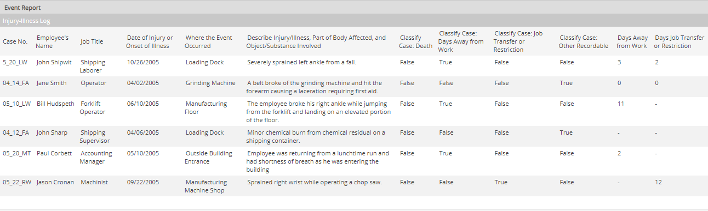
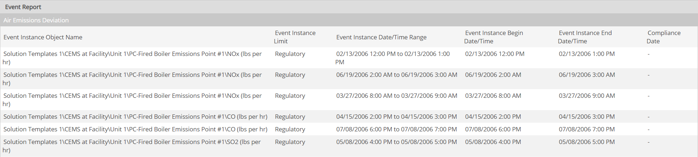

Event Reports are used to view summary information for selected events.
Some examples or event reports are:
You can report on one or more Event Logs in an event report. The report columns are the event fields you select to include in the report plus any properties of the related objects you choose to include.
The type of information included in an event report will depend on the type of requirement(s) monitored by an Event Log and the fields available in the Event Template.
For example, a health and safety incident report may include incident details such as date, type of incident, description of injury, and work-related details such as days lost.

An event report for monitored numeric requirements may include numeric data fields and calculated fields such as duration of event and high and low values. Aggregates may be included to provide subtotals and totals.

Sample Event Report for Numeric Requirement
To include custom fields from the monitored requirements in the report, you must include the requirement(s) or the parent object for the requirement(s) in the Selected Objects.